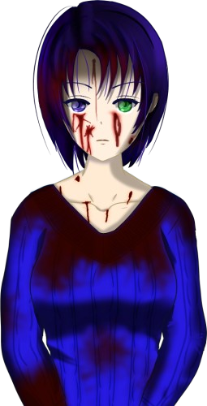

Script 00001D5F

Thank you for your hard work, You-sama. You have reached the first ending of the True Jusatsu Arc.
Honestly, I had thought it would end with a little more hope, but it was a tragedy like none before.
Nevertheless, there were many clues, were there not?
When one is bathed in second-generation blood, one changes into the third generation―the green-eyed―and is tormented by strong murderous intent toward beings of the same kind.
I feel I am beginning, somehow, to see what my murderous intent toward Natsumi truly was.
What do you think, You-sama? Has the truth begun to come into view for you?
Just as I would expect of you. But this world is still vast, and deep.
Still, little by little, you will surely draw closer to the truth.
Also, if you keep reasoning it through together with the references you have obtained so far, something may come into view.
Now, more importantly, Erina Goto said it a little while ago, did she not?
That the cause of the tragedy just now was the Kogori couple going near the Arata settlement.
Then, how could that have been prevented, and a better ending reached?
I would like to guide you to that route, but for that, we need to go far back in time.
Yes, back when Natsumi Kogori and the others were still small, there was an event that, though trivial, made the route branch greatly.
Now then, let us go. I will guide you.
I see. In that case, why not try checking the references once?
You may begin to see how they connect to the story so far.
Speaking of references...
I believe you have seen the reference you obtained at the end of the scenario, 'The Culprit Who Led Her There.'
That phenomenon happened again, did it not? A person who should have been dead, walking.
Going by the order of events, when my mother arrived at the settlement, Sakura Niimura should already have been dead.
And yet she was moving, which means―
If I remember correctly, there was also a reference that explains that. I think it would be good to look at that one as well.
Now, it seems that from here on, the range you are able to see widens all at once.
Please proceed however you like. The true form of this world has only just begun to show itself.